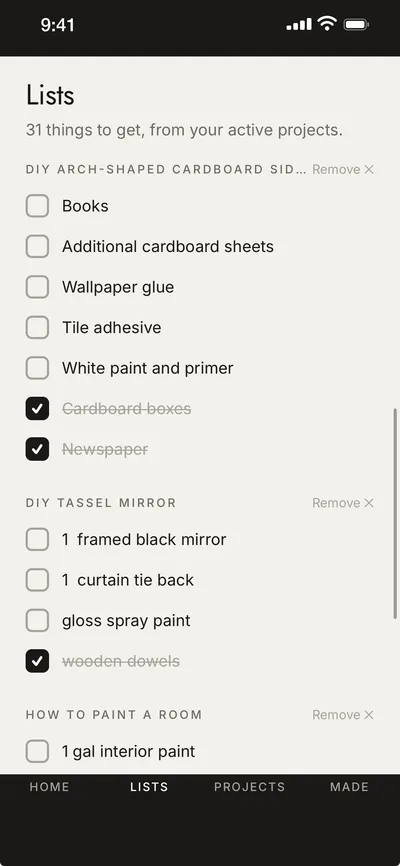
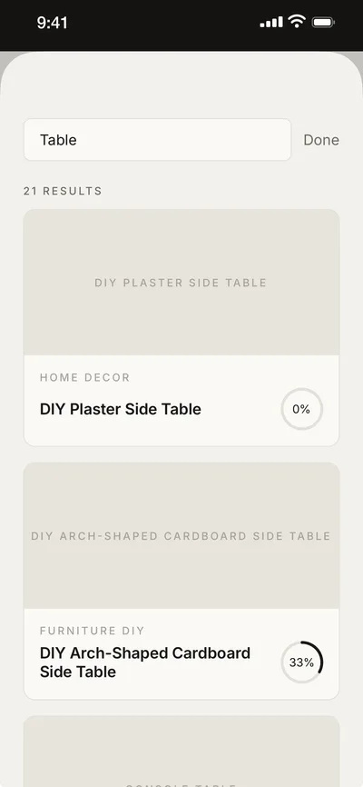
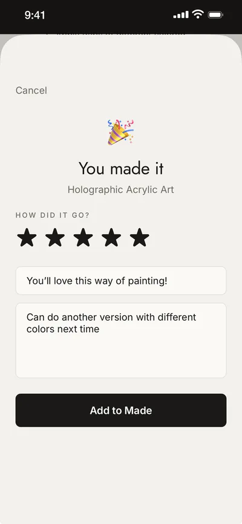

Save from anywhere
All your ideas, finally in one place.
Use the share button in TikTok, Instagram, YouTube, Pinterest or Safari to save into InspiraDo, then sort it into decks that make sense to you.
Save it. Find it. Do it.
All those tutorials, ideas, and projects you keep saving? InspiraDo helps you organize them, find them, and finally bring them to life.
Free on iPhone
The problem
A reel in one app, a pin in another, forty screenshots in your camera roll and a bookmark you'll never open. The inspiration is there. The plan never is.
InspiraDo puts it all in one place, as a plan you can follow.
How it works
Share a TikTok, Reel, YouTube video, Pin or web page straight into InspiraDo. The original link always comes with it.
Group ideas into decks like Decor, Beauty or Garden, and turn the ones you love into projects.
Get a clear plan with steps, materials and tools, drafted for you or written your way.
Search everything you've saved, down to a single material, the moment you're ready to make.
Features
Save from anywhere
Use the share button in TikTok, Instagram, YouTube, Pinterest or Safari to save into InspiraDo, then sort it into decks that make sense to you.
AI drafts the plan
InspiraDo reads the tutorial and drafts the steps, materials and tools for you in seconds. It's a starting point you can edit, so the plan is always yours.

One shopping list
Materials from all your active projects land on one checklist, grouped by project, ready for the craft store.
Follow Mode
Big, glanceable steps with tips while your hands are busy. Tap to the next one when you're ready.

Find it in seconds
Titles, materials and steps are all searchable. Remember the spray paint but not the project? Just type it.

Celebrate what you made
Finish a project, rate it, add notes and photos, and watch your Made shelf grow.
Saved a tutorial as screenshots? Add them and InspiraDo reads them into a project.
Mix a TikTok, a YouTube video and a web guide into one plan, instead of picking just one.
We never re-host anyone's videos. Every project keeps a "View Original" link back to the creator.
On a computer? Your projects are at app.inspirado.app too.
Who it's for
…and anyone who saves ideas they want to try someday.

Free on iPhone · or use it in your browser